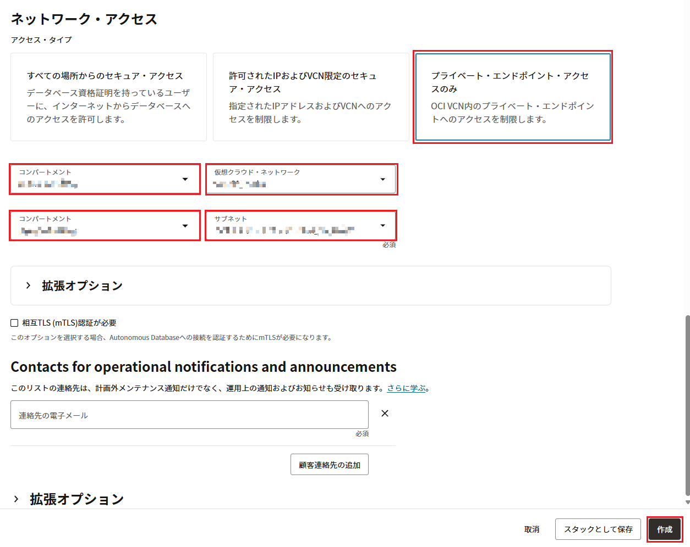
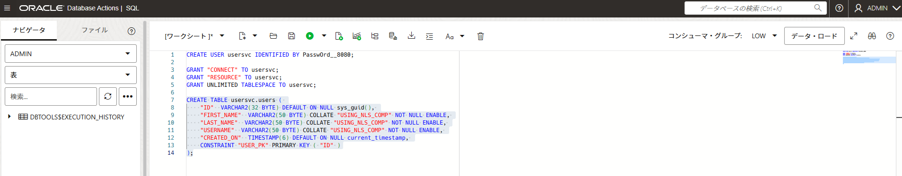
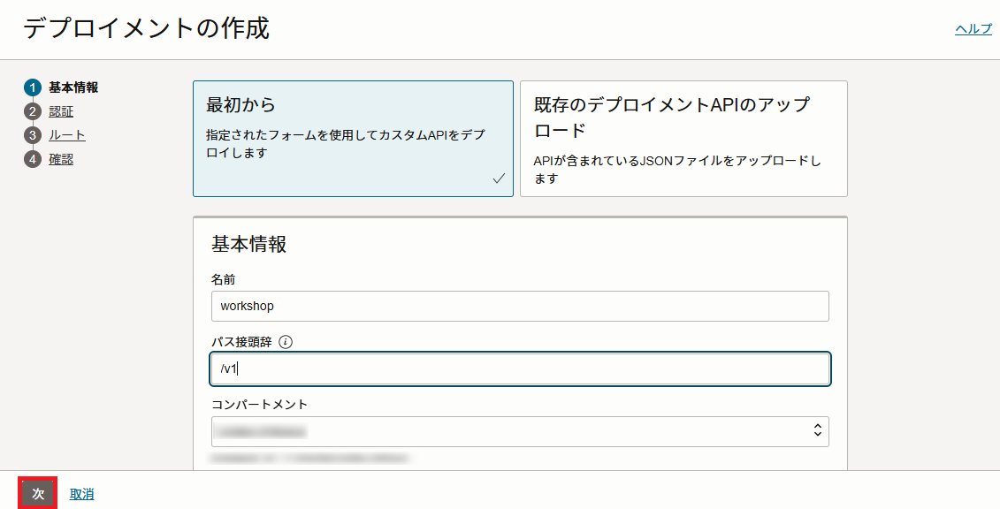

このセッションでは、OCI Functions から python-oracledb ドライバを利用してATPに接続し、データを取得する方法について説明します。 そして、OCI API Gateway から OCI Functions にルーティングする方法について説明します。
このハンズオンが完了すると、以下のようなコンテンンツが出来上がります。
図：OCI API Gateway → OCI Functions → ATP のデータフロー
条件
- クラウド環境
- 有効なOracle Cloudアカウントがあること
- 事前環境構築
1.事前準備
1-1.ATPのプロビジョニング
OCIコンソールのハンバーガーメニューから[Oracle Database]で、[Autonomous Database]をクリックします。
Autonomous Databaseの作成画面で、コンパートメント名をクリックして、コンパートメントの選択リストを表示します。使用するコンパートメントを選択して、「フィルタの適用」をクリックします。
使用するコンパートメントを確認して、「Autonomous Databaseの作成」をクリックします。
以下項目を入力して、「作成」をクリックします。
- 表示名：表示名を入力。今回は、
Workshop-ATP。 - データベース名：今回は、
WORKSHOPATP。 - コンパートメント：使用するコンパートメントを選択。
- ワークロード・タイプの選択：トランザクション処理
- データベース・バージョンの選択：
19c - ECPU数：
2 - ストレージ：
1024 - ストレージ単位サイズ：
GB - ストレージの自動スケーリング：チェック・オフのまま。
- パスワード：パスワードを入力。（ここでは Or@cle!12345）
- パスワードの確認：再度パスワードを入力。（ここでは Or@cle!12345）
- ネットワーク・アクセスの選択：プライベート・エンドポイント・アクセスのみ
- コンパートメント（１）：仮想クラウド・ネットワークが属しているコンパートメント
- 仮想クラウド・ネットワーク：OCI Functions ハンズオンで作成したVCNを指定。
- コンパートメント（２）：サブネットが属しているコンパートメント
- サブネット：OCI Functions ハンズオンで作成したVCNのパブリック・サブネットを指定。


数分後に、ステータスが「利用可能」に変わります。
Autonomous Databaseの詳細の画面から[More actions]で、[ネットワーク・アクセスの更新]をクリックします。
「パブリック・アクセスを許可」スイッチをオンにし、許可 IP に自分の IP を追加した後、更新ボタンをクリックします。
数分後に、ステータスが「利用可能」に変わります。 Autonomous Databaseの詳細の画面から[データベース接続]をクリックします。
TLS認証で「TLS」を選択して、接続文字列をローカルPCのメモ帳などにメモします。
これで、ATPのプロビジョニングは完了です。
1-2.イングレス・ルールの追加
Autonomous Database の TLS 接続は、デフォルトで 1521 ポートを使用します。ポート1521のトラフィックを許可するには、サブネットに対してイングレス・ルールを追加する必要があります。
Autonomous Databaseの詳細の画面で、ネットワークセクションでATPが属しているサブネットをクリックします。
サブネットの詳細画面で、「セキュリティ」タブをクリックし、セキュリティリストをクリックします。
セキュリティリストの詳細画面で、「セキュリティ・ルール」をクリックし、「イングレス・ルールの追加」をクリックします。
以下項目を入力して、[イングレース・ルールの追加]をクリックします。
- ステートレス：チェックをオフにする（デフォルト値）
- ソースCIDR：0.0.0.0/0
- IPプロトコル：TCP（デフォルト値）
- 宛先ポート範囲：1521
新しいイングレス・ルールが追加されます。
OCI API Gateway を利用する上で、443 ポートも使用します。ポート1521と同じ手順で443ポートのトラフィックを許可するイングレス・ルールを同じサブネットに追加してください。
1-3.ユーザーテーブルおよびサンプル・データの準備
Autonomous Databaseの詳細の画面で、「データベース・アクション」→「SQL」をクリックします。
以下のコマンドを入力して、「スクリプトの実行」(またはF5)をクリックして、新しいユーザーを作成します。
CREATE USER usersvc IDENTIFIED BY [PASSWORD];
今回は、
CREATE USER usersvc IDENTIFIED BY PasswOrd__8080;
とします。
ユーザーusersvcに対して、必要な権限を付与します。
GRANT "CONNECT" TO usersvc;
GRANT "RESOURCE" TO usersvc;
GRANT UNLIMITED TABLESPACE TO usersvc;
検証用のテーブルusersを作成します。
CREATE TABLE usersvc.users (
"ID" VARCHAR2(32 BYTE) DEFAULT ON NULL sys_guid(),
"FIRST_NAME" VARCHAR2(50 BYTE) COLLATE "USING_NLS_COMP" NOT NULL ENABLE,
"LAST_NAME" VARCHAR2(50 BYTE) COLLATE "USING_NLS_COMP" NOT NULL ENABLE,
"USERNAME" VARCHAR2(50 BYTE) COLLATE "USING_NLS_COMP" NOT NULL ENABLE,
"CREATED_ON" TIMESTAMP(6) DEFAULT ON NULL current_timestamp,
CONSTRAINT "USER_PK" PRIMARY KEY ( "ID" )
);

これで、ユーザーテーブルおよびサンプル・データの準備は完了です。
2.OCI Functions の作成
ここでは、OCI Functions の作成とデプロイを行います。
2-1.アプリケーションの作成
OCIコンソールのハンバーガーメニューをクリックして、「開発者サービス」に移動して、「ファンクション」をクリックします。
OCI Functions に使用する予定のリージョンを選択します（Fn Project CLIコンテキストで指定されたDockerレジストリと同じリージョンを推奨します）。
Fn Project CLIコンテキストで指定されたコンパートメントを選択します。
「アプリケーションの作成」をクリックして、次を指定して、「作成」をクリックします。
- 名前：このアプリケーションに最初のFunctionをデプロイし、Functionを呼び出すときにこのアプリケーションを指定。今回は、
fn-crud-atp - VCN：Functionを実行するVCN。今回は、OCI Functions ハンズオンで作成したVCNを指定。
- サブネット：Functionを実行するサブネット。今回は、OCI Functions ハンズオンで作成したVCNのパブリック・サブネットを指定。
- Shape：OCI Functions を実行するために使用される基盤となるコンピューティング環境。今回はGENERIC_X86を指定。
アプリケーション名について
アプリケーション名はテナンシで一意になります。
集合ハンズオンなど複数人で同一環境を共有されている皆様は、fn-crud-atp-yiなどの名前のイニシャルを付与し、名前が重複しないようにしてください。
OCI Functions ハンズオンで利用したCloud Shellにログインします。
デプロイ前にFunctionsを実行するために環境変数をいくつか設定します。
fn config app fn-crud-atp DB_USER usersvc
fn config app fn-crud-atp DB_PASSWORD [db_password]
db_password：今回DBへ接続用のユーザー「usersvc」のパスワード。1-3.ユーザーテーブルおよびサンプル・データの準備で設定したパスワード「PasswOrd__8080」を使用します。
fn config app fn-crud-atp DSN [dsn]
dsn：ATPへの接続文字列。1-1.ATPのプロビジョニングで取得した値を使用します。
機密情報を含む環境変数について
機密情報を含む構成変数は、常に暗号化する必要があります。今回はシンプルな手順にするために特に暗号化は実施しませんが、実際に使用する場合は、キー管理を使用する方法を確認してください。
2-2.アプリケーションの作成
ワークショップ用のコンテンツをクローンし、ディレクトリに移動します。
git clone https://github.com/oracle-japan/apigateway-functions-crud-atp.git
cd apigateway-functions-crud-atp
次に、以下のコマンドを実行して、各 Function を順番にデプロイします。
※アプリケーション名は設定した名称に適宜置き換えてください。
Create Function のデプロイ
cd create-func
fn -v deploy --app fn-crud-atp
Read Function のデプロイ
cd ../read-func
fn -v deploy --app fn-crud-atp
Update Function のデプロイ
cd ../update-func
fn -v deploy --app fn-crud-atp
Delete Function のデプロイ
cd ../delete-func
fn -v deploy --app fn-crud-atp
これで、すべてのFunctionの作成とデプロイが完了しました。
【オプション】 Create, Read, Update, Delete の処理を一つに統合したファンクションを利用する場合は以下の手順を実行してください。
cd crud-func
fn -v deploy --app fn-crud-atp
3.OCI API Gatewayの作成
OCIコンソールにログインし、[開発者サービス]に移動して、[API管理] => [ゲートウェイ]をクリックしてから、次の操作を行います。
[ゲートウェイの作成]をクリックして、次を指定します。
-
名前：新しいゲートウェイの名前、ここでは、
workshop-api-gateway -
タイプ：パブリック
-
コンパートメント：OCI API Gatewayリソースを作成するコンパートメントの名前（こちらのワークショップではFunctionと同じコンパートメントを指定してください）
-
仮想クラウド・ネットワーク：OCI API Gatewayで使用するVCN。(Oracle Functionと同じVCNを指定してください)
-
サブネット：VCNのサブネット。(Oracle Functionと同じVCNサブネットを指定してください)
ゲートウェイ名について
ゲートウェイ名はテナンシで一意になります。
集合ハンズオンなど複数人で同一環境を共有されている皆様は、workshop-api-gateway-yiなどの名前のイニシャルを付与し、名前が重複しないようにしてください。
新しいAPIゲートウェイが作成されると、[ゲートウェイ]ページのリストにアクティブと表示されます。
[リソース]で[デプロイメント]をクリックし、[デプロイメントの作成]をクリックします。
[最初から]をクリックし、[基本情報]セクションで次を指定して、「次」をクリックします。
- 名前：新しいAPIデプロイメントの名前、今回は、
workshop - パス接頭辞：APIデプロイメントに含まれるすべてのルートのパスに追加するパスプレフィックス、今回は、
/v1 - コンパートメント：新しいAPIデプロイメントを作成するコンパートメント

[認証]セクションで[最初から]をクリックし、「次」をクリックします。
[1のルーティング]セクションで次を指定して、[別のルート]をクリックします。
- パス：APIのパス。今回は、
/users/{userId} - メソッド：APIのメソッドを指定します。今回は、
POST - バックエンド・タイプ：バックエンド・サービスのタイプを指定します。今回は、
Oracleファンクション - アプリケーション：ファンクションのアプリケーションを指定します。今回は、
fn-crud-atp - 関数名：ファンクションを指定します。今回は、
create-func
【オプション】項目で説明した統合したファンクションを利用する場合
- 関数名：
crud-funcファンクションを指定します。
[2のルーティング]セクションで次を指定して、[別のルート]をクリックします。
- パス：APIのパス。今回は、
/users - メソッド：APIのメソッドを指定します。今回は、
GET - バックエンド・タイプ：バックエンド・サービスのタイプを指定します。今回は、
Oracleファンクション - アプリケーション：ファンクションのアプリケーションを指定します。今回は、
fn-crud-atp - 関数名：ファンクションを指定します。今回は、
read-func
【オプション】項目で説明した統合したファンクションを利用する場合
- 関数名：
crud-funcファンクションを指定します。
[3のルーティング]セクションで次を指定して、[別のルート]をクリックします。
- パス：APIのパス。今回は、
/users/{userId} - メソッド：APIのメソッドを指定します。今回は、
GET - バックエンド・タイプ：バックエンド・サービスのタイプを指定します。今回は、
Oracleファンクション - アプリケーション：ファンクションのアプリケーションを指定します。今回は、
fn-crud-atp - 関数名：ファンクションを指定します。今回は、
read-func
【オプション】項目で説明した統合したファンクションを利用する場合
- 関数名：
crud-funcファンクションを指定します。
[4のルーティング]セクションで次を指定して、[別のルート]をクリックします。
- パス：APIのパス。今回は、
/users/{userId} - メソッド：APIのメソッドを指定します。今回は、
PUT - バックエンド・タイプ：バックエンド・サービスのタイプを指定します。今回は、
Oracleファンクション - アプリケーション：ファンクションのアプリケーションを指定します。今回は、
fn-crud-atp - 関数名：ファンクションを指定します。今回は、
update-func
【オプション】項目で説明した統合したファンクションを利用する場合
- 関数名：
crud-funcファンクションを指定します。
[5のルーティング]セクションで次を指定して、[次]をクリックします。
- パス：APIのパス。今回は、
/users/{userId} - メソッド：APIのメソッドを指定します。今回は、
DELETE - バックエンド・タイプ：バックエンド・サービスのタイプを指定します。今回は、
Oracleファンクション - アプリケーション：ファンクションのアプリケーションを指定します。今回は、
fn-crud-atp - 関数名：ファンクションを指定します。今回は、
delete-func
【オプション】項目で説明した統合したファンクションを利用する場合
- 関数名：
crud-funcファンクションを指定します。
新しいAPIデプロイメント用に入力した詳細を確認し、[作成]をクリックして作成します。
APIデプロイメントのリストで、作成したばかりの新しいAPIデプロイメントのエンドポイントの横にある[コピー]をクリックして、エンドポイントをコピーします。
以上で、OCI API Gatewayの設定は完了です。
4.動作確認
ここでは、OCI API Gateway を実際に呼び出して、ユーザー管理に関する CRUD（Create, Read, Update, Delete）操作の API の動作確認を行います。この確認には、Postman を使用します。Postman は、HTTP リクエストを簡単に送信し、API の動作をテストすることができる便利なツールです。
4-1. ユーザー作成APIのテスト
ユーザー作成APIをテストするために、以下の手順を実行します。
- curl コマンドの設定
- メソッド：POST
- エンドポイント：
コピーしたAPIデプロイメントのエンドポイント/v1/users/id0001を入力します。例えば、https://xxxxxxxxxxxxxx.ap-osaka-1.oci.customer-oci.com/v1/users/id0001※ ID名は任意値（ここでは、id0001 として進めます） - Bodyのタイプ：
JSON - Bodyの内容：
{"first_name": "John","last_name": "Doe","username": "johndoe"}
これは、新しく作成するユーザーの名前、姓、ユーザー名を表します。
- コマンドの実行
curl -X POST "コピーしたAPIデプロイメントのエンドポイント/v1/users/id0001" \ -H "Content-Type: application/json" \ -d '{"first_name" : "John" , "last_name" : "Doe" , "username" : "johndoe"}' - コマンド結果の確認
API コールが成功すると、OCI Functions がバックエンドとして実行され、以下のような JSON レスポンスが返されます。これは、新しいユーザーが正常に作成されたことを示しています。{ "message": "User created successfully" }
4-2. ユーザー読みAPIのテスト
ユーザー読みAPIのテストは、全ユーザーの情報を取得する場合と、特定のユーザーの情報を取得する場合の2種類のテストを行います。
全ユーザー情報の取得
- curl コマンドの設定
- メソッド：GET
- エンドポイント：
コピーしたAPIデプロイメントのエンドポイント/v1/usersを入力します。例えば、https://xxxxxxxxxxxxxx.ap-osaka-1.oci.customer-oci.com/v1/usersのような形式になります。
- コマンドの実行
curl -X GET "コピーしたAPIデプロイメントのエンドポイント/v1/users" \ -H "Content-Type: application/json" - 結果の確認
API コールが成功すると、OCI Functions がバックエンドとして実行され、以下のような JSON レスポンスが返されます。これは、サーバー上に存在する全ユーザーの情報を示しています。[ { "ID": "id0001", "FIRST_NAME": "John", "LAST_NAME": "Doe", "USERNAME": "johndoe", "CREATED_ON": "2025-03-06T01:47:25.474835" } ]
特定ユーザー情報の取得
- curl コマンドの設定
- メソッド：GET
- エンドポイント：
コピーしたAPIデプロイメントのエンドポイント/v1/users/id0001を入力します。例えば、https://xxxxxxxxxxxxxx.ap-osaka-1.oci.customer-oci.com/v1/users/id0001のような形式になります。
- リクエストの送信
curl -X GET "コピーしたAPIデプロイメントのエンドポイント/v1/users/id0001" \ -H "Content-Type: application/json" - 結果の確認
API コールが成功すると、OCI Functions がバックエンドとして実行され、以下のような JSON レスポンスが返されます。これは、指定されたIDのユーザーの詳細情報を示しています。{ "ID": "id0001", "FIRST_NAME": "John", "LAST_NAME": "Doe", "USERNAME": "johndoe", "CREATED_ON": "2025-03-06T01:47:25.474835" }
4-3. ユーザー更新APIのテスト
ユーザー更新APIをテストするために、以下の手順を実行します。
- curl コマンドの設定
- メソッド：PUT
- エンドポイント：
コピーしたAPIデプロイメントのエンドポイント/v1/users/id0001を入力します。例えば、https://xxxxxxxxxxxxxx.ap-osaka-1.oci.customer-oci.com/v1/users/id0001のような形式になります。 - Bodyのタイプ：
JSON - Bodyの内容：
{"first_name": "Mike","last_name": "Smith","username": "mikesmith"}
- リクエストの送信
curl -X PUT "コピーしたAPIデプロイメントのエンドポイント/v1/users/id0001" \ -H "Content-Type: application/json" \ -d '{"first_name": "Mike","last_name": "Smith","username": "mikesmith"}' - 結果の確認
API コールが成功すると、OCI Functions がバックエンドとして実行され、以下のような JSON レスポンスが返されます。これは、指定されたユーザーの情報が正常に更新されたことを示しています。{ "message": "User updated successfully" } - 更新後の情報確認
更新が成功したことを確認するために、再度特定ユーザー情報の取得APIを呼び出します。- メソッド：GET
- エンドポイント：
コピーしたAPIデプロイメントのエンドポイント/v1/users/id0001を入力します。curl -X GET "コピーしたAPIデプロイメントのエンドポイント/v1/users/id0001" \ -H "Content-Type: application/json"API コールが成功すると、OCI Functions がバックエンドとして実行され、以下のような JSON レスポンスが返されます。これにより、ユーザー情報が正しく更新されたことが確認できます。
{ "ID": "id0001", "FIRST_NAME": "Mike", "LAST_NAME": "Smith", "USERNAME": "mikesmith", "CREATED_ON": "2025-03-06T01:47:25.474835" }
4-4. ユーザー削除APIのテスト
ユーザー削除APIをテストするために、以下の手順を実行します。
- curl コマンドの設定
- メソッド：DELETE
- エンドポイント：
コピーしたAPIデプロイメントのエンドポイント/v1/users/id0001を入力します。例えば、https://xxxxxxxxxxxxxx.ap-osaka-1.oci.customer-oci.com/v1/users/id0001のような形式になります。
- リクエストの送信
curl -X DELETE "コピーしたAPIデプロイメントのエンドポイント/v1/users/id0001" \ -H "Content-Type: application/json" - 結果の確認
API コールが成功すると、OCI Functions がバックエンドとして実行され、以下のような JSON レスポンスが返されます。{ "message": "User deleted successfully" } - 削除後の情報確認
削除が成功したことを確認するために、再度特定ユーザー情報の取得APIを呼び出します。- メソッド：GET
- エンドポイント：
コピーしたAPIデプロイメントのエンドポイント/v1/users/id0001を入力します。curl -X GET "コピーしたAPIデプロイメントのエンドポイント/v1/users/id0001" \ -H "Content-Type: application/json"{ "message": "User not found" }
以上の手順により、ユーザー管理に関するCRUD操作のAPIの動作確認が完了します。
以上で、OCI Functions を通じて python - oracledb ドライバを使って ATP に接続してデータを取得し、OCI API Gateway から OCI Functions にルーティングする方法が身につきました！ お疲れ様でした。